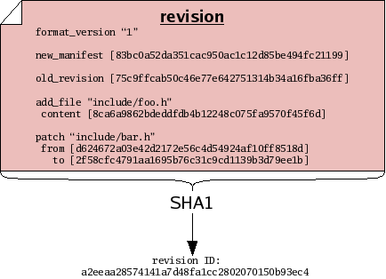
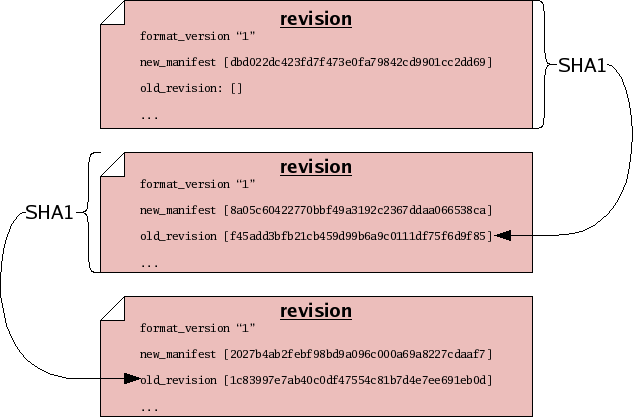

Next: Certificates, Previous: Versions of trees, Up: Concepts [Contents][Index]
Suppose you sit down to edit some files. Before you start working, you may record a manifest of the files, for reference sake. When you finish working, you may record another manifest. These “before and after” snapshots of the tree of files you worked on can serve as historical records of the set of changes, or changeset, that you made. In order to capture a “complete” view of history – both the changes made and the state of your file tree on either side of those changes – monotone builds a special composite file called a revision each time you make changes. Like manifests, revisions are ordinary text files which can be passed through the SHA1 function and thus assigned a revision ID.

The content of a revision includes one or more changesets. These changesets make reference to file IDs, to describe how the tree changed. The revision also contains manifest IDs, as another way of describing the tree “before and after” the changeset — storing this information in two forms allows monotone to detect any bugs or corrupted data before they can enter your history. Finally and crucially, revisions also make reference to other revision IDs. This fact – that revisions include the IDs of other revisions – causes the set of revisions to join together into a historical chain of events, somewhat like a “linked list”. Each revision in the chain has a unique ID, which includes by reference all the revisions preceding it. Even if you undo a changeset, and return to a previously-visited manifest ID during the course of your edits, each revision will incorporate the ID of its predecessor, thus forming a new unique ID for each point in history.

Next: Certificates, Previous: Versions of trees, Up: Concepts [Contents][Index]